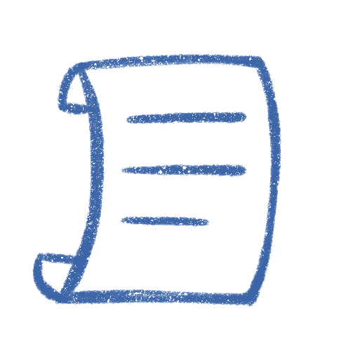
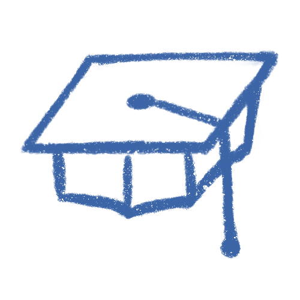

View Resume/CV


Professional Experiences
Product Designer, 05/2019 – 08/2021
NowPow (a Unite Us company), Chicago, IL
- Sole user experience researcher and designer supporting 5 different products; designed and launched 1 new product with another nearing launch before I left.
- Lead all user research through interview, usability testing, and participatory design, ranging from 10 to 15 sessions each month.
- Implemented UXArmy, the first user research vendor the company had, to help facilitate unmoderated usability testing sessions.
- Create design system to increase hand-off efficiency and design consistency; system includes a UI kit built with Adobe XD.
- Collaborate with product managers, developers, QA, and customer success to validate designs, prioritize features, and determine products’ future directions.
UX Designer Intern, 06/2018 – 08/2018, 01/2019 – 04/2019
TechSmith Corporation, Okemos, MI
- Primary UX designer in the early stage of product cycle, defined project scope and user groups through various research methods, such as comparative analysis.
- Created designs for desktop application – implemented in the 2019 release update.
- Participated in user interviews and synthesize results to support design decisions.
Research Experience
HCI Researcher, 07/2023 – Present
Cyrus Tang Foundation Project, University of California Irvine, Irvine, CA
- Work with an interdisciplinary research team (psychology, statistics, and public health) to assess college students’ mental health in China.
- Adapted and translated English digital mental health interventions to Chinese for pilot studies.
Researcher, 06/2022 – Present
Asian Mental Health Collectives (AMHC)
- Design study protocol and materials for program evaluations.
- Conducted and analyzed 4 focus groups to understand the Asian American mental health experience and the technologies used to manage mental health challenges.
- Developed new research ideas for AMHC, including program evaluation strategies.
Research Assistant, 10/2020 – Present
PITCH Lab/CBITs, Northwestern University, Chicago, IL
- Led 20+ remote participatory design sessions to understand the voice assistant’s role in supporting older adults’ mental health.
- Conducted and analyzed 10+ interviews for a project on understanding the mental well-being of software engineers.
- Designed digital prototypes for usability testing sessions.
- Created product requirements for developers to build an Alexa Skill for older adults and a web app for family caregivers.
Research Assistant, 10/2018 – 05/2019
Empathetic Research Lab, University of Michigan, Ann Arbor, MI
- Conducted literature review for independent study on child-centered approach in behavioral interventions for children with special needs.
- Led a team of 4 to design protocol, conduct interviews, and analyze results.
- Presented in a poster session at University of Michigan’s Exposition, with over 200 attendees from the university and in the industry.
Graduate Student Instructor, 09/2018 – 05/2019
University of Michigan, Ann Arbor, MI
- Led a team of 4 graduate student instructors to create testing materials and manage testing logistics for 300 undergraduate students.
- Taught over 75+ students on Introduction to Cognitive Psychology through 3 discussion sections for 2 semesters.
- Created and executed learning activities based on students’ learning styles.
Research Assistant, 02/2015 – 06/2017
VECTR Lab, San Jose State University, San Jose, CA
- Collected data from over 50 participants through go-no-go tasks, flanker test, and care sorting for lab studies on cyber security and human factors.
- Developed procedures for lab studies, such as card sorting and concept mapping.
- Entered, organized, and compiled quantitative data for 4 studies via Excel and SPSS.
- Conducted literature review on cybersecurity, cognitive task analysis, and situational awareness to assist with publication submission.

Teaching Experience
Guest Lecturer, 2/13/2024
Purdue University, West Lafayette, IN
- Held a guest lecture for an undergraduate-level course, CS475-HCI, comparing my industry and academic experiences in HCI.
Graduate Student Instructor, 09/2018 – 05/2019
University of Michigan, Ann Arbor, MI
- Led a team of 4 graduate student instructors to create testing materials and manage testing logistics for 300 undergraduate students.
- Taught over 75+ students on Introduction to Cognitive Psychology through 3 discussion sections for 2 semesters.

Education
University of California, Irvine, CA
Ph.D., Informatics
Human-Computer Interaction,
GPA 3.97 | May 2026
University of Michigan, Ann Arbor, MI
Master of Science, Information
User Experience Research and Design,
GPA 3.98 | May 2019
San Jose State University, San Jose, CA
Bachelor of Science, Psychology (Honors)
Mathematics Minor,
GPA 3.95 | May 2017
Mentorship/Leadership Experience
- Communications Chair, Informatics Graduate Student Association (IGSA) at the University of California, Irvine
- Alumni mentor, San Jose State Universit and University of Michigan
- Information mentor for prospective students at University of Michigan
- Lead Graduate Student Instructor (GSI) for Introduction to Cognitive Psychology
- President at Learning Education Technology at School of Information (LETSI)
- Membership coordinator at Psi Chi SJSU
- Coach and mentor for FIRST Lego League & Robotics Competitions (age 8 – 18)
Skills
Language (Fluent, excluding English)
- Chinese: Mandarin/Cantonese
Application (Intermediate/Advanced)
- Sketch/InVision
- Figma/Adobe XD
- HTML/CSS
- Microsoft: Excel, PowerPoint, Word
Application (Proficient)
- R/SPSS
- Python/SQLite
Research Method
- Affinity Diagram
- Card Sorting
- Interview/Contextual Inquiry
- Participatory Design
- Personas/Empathy Map
- Survey Design and Analysis
- Usability Testing
Volunteering
ACM Student Volunteer
- CSCS 2023
- DIS 2022
Asian Mental Health Collectives (AMHC)
- Designed infographics to provide psychoeducational materials on social media.
- Design and conduct qualitative research for understanding Asian mental health and evaluating AMHC program experiences.
National Alliance of Mental Illness (NAMI)
- Design and send monthly newsletter via MailChimp.
- Created marketing materials using Adobe.
- Assisted with presentations during patient-hours at local hospital.
Shelter Association at Washtenaw County
- Assisted with meal distribution and other clerical tasks.
For Inspiration and Recognition of Science and Technology (FIRST)
- Volunteer at K-12 robotics events as various roles, such as referee and judge.
- Delivered workshops for elementary and middle school students on LEGO robotics.
Awards and Honors
- Grad Slam 2024 Semi-finalist, University of California Irvine, Graduate Division
- Mental Health for College Students Hackathon 2022 Finalists, University of California Irvine, ANTrepreneurship Center
- Chair Award 2021, University of California Irvine
- Graduation commencement speaker , University of Michigan School of Information 2019 spring commencement
- Half merit scholarship, University of Michigan School of Information
- Volunteer od the Year 2017, Western Region Robotics Forum
- President scholar 2016 and 2017, San Jose State University
- NSF Research Experiences of Undergraduate Fellowship 2016 and 2017, at San Jose State University